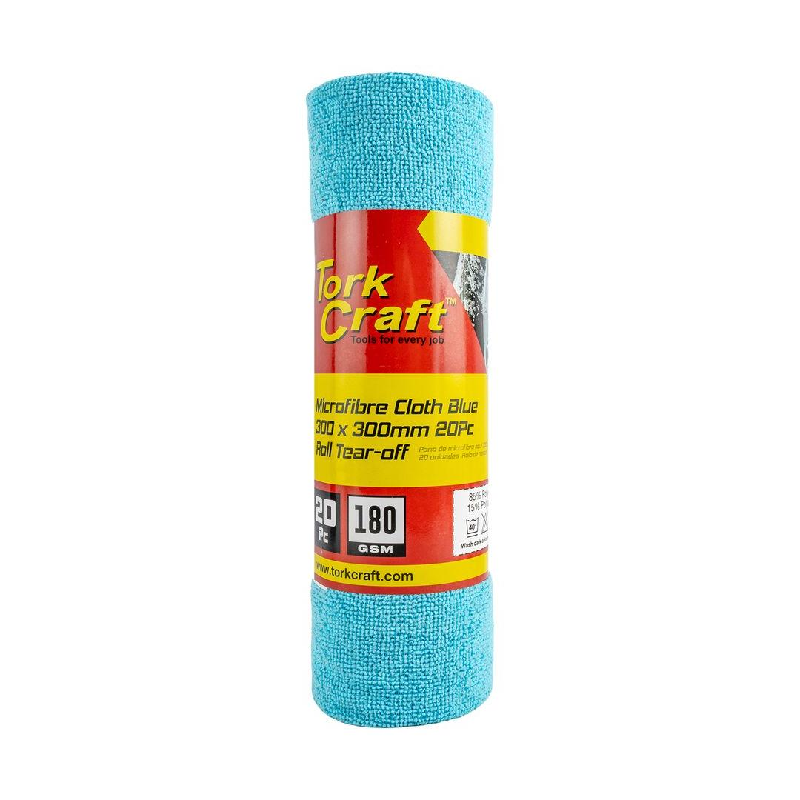
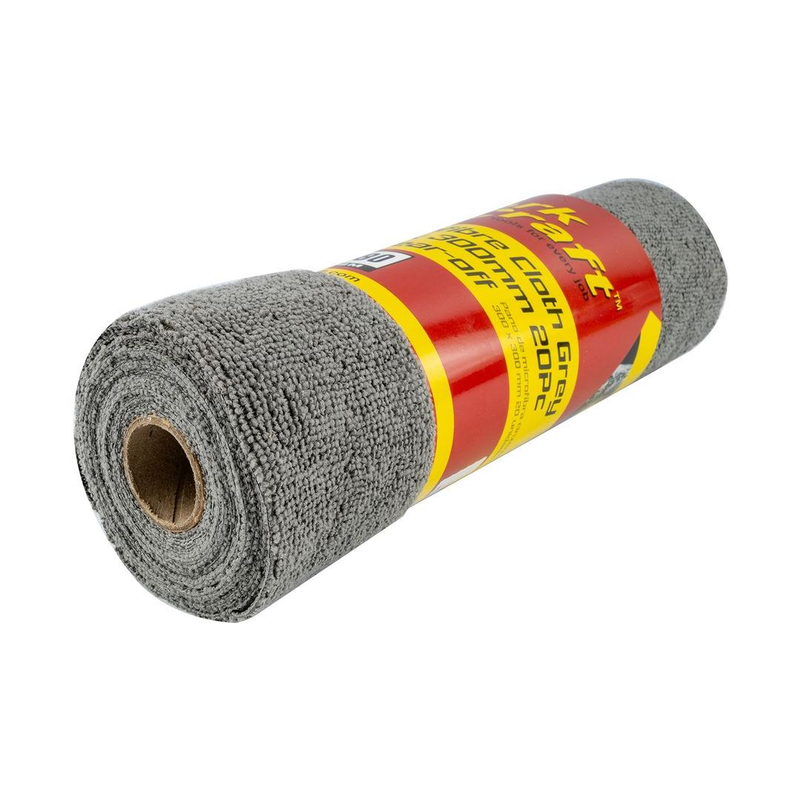

SPC00105


Colour: Blue
Size: 300 x 300mm
GSM (grams per square meter): 180
Streamline your cleaning workflow with our Blue Microfibre Cloth Tear-Off Roll, featuring 20 high-performance cloths in a convenient, perforated format. Each 300mm x 300mm sheet is engineered with a 180GSM weight, strike the perfect balance between lightweight flexibility and reliable durability for everyday wiping tasks. This innovative roll design allows you to dispense a fresh cloth instantly, making it an ideal solution for fast-paced environments like automotive shops, commercial kitchens, or busy households where efficiency is key.
Unlike standard disposable wipes, these microfibre sheets are designed to grab and hold onto grease, grime, and dust with ease. The vibrant blue color is perfect for color-coded cleaning systems, ensuring you maintain hygiene standards across different work areas. While they offer the grab-and-go convenience of a paper towel roll, these cloths are fully washable and reusable, providing a cost-effective and eco-friendly alternative that reduces waste without sacrificing cleaning power.
Application: